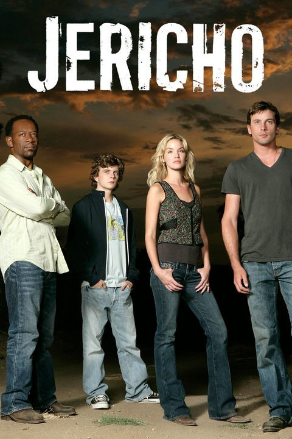

Jericho (Aired 2006-2008)
Rating: 8/10
Age Restriction: TV-14
A small Kansas town is left in the dark after a giant mushroom cloud arises by Denver, Colorado. The survivors try to find solutions to this eruption and how to survive.
Creators: Stephen Chbosky, Josh Schaer, Jonathan E. Steinberg
Cast
Skeet Ulrich as .... Jake Green
Lennie James as .... Robert Hawkins
Ashley Scott as .... Emily Sullivan
Kenneth Mitchell as .... Eric Green
Brad Beyer as .... Stanley Richmond
April Parker-Jones as .... Darcy Hawkins
Alicia Coppola as .... Mimi Clark